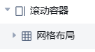
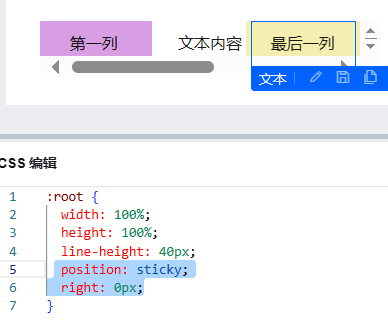

通过网格布局实现数据列表中列固定
通过网格布局实现数据列表中列固定
nancy Jane今天是1024程序员节，解决了一个小问题，晚上下班后奖励自己一个小蛋糕+冰激凌+炸鸡+啤酒+电影。
1.问题
在滚动容器中添加网格布局并绑定循环数据后，无法固定网格布局的列
如果我们使用子绝父相定位，给列设置固定定位，行或者滚动容器设置相对定位，那么左右滑动时，目标列不是固定在我们想要的最右侧，而是页面上固定的某点，总之这种方法无法实现
2.补充知识
- 滚动容器
可以使用滚动容器来进行展示超出范围之后需要滚动的内容。
当滚动容器内组件内容占用的总宽度/高度大于滚动容器本身的宽度/高度时，便会出现滚动条，通过滑动滚动条滑动来查看容器内的全部内容。
注意要为滚动容器设置宽高，确保内部展示内容的宽高大于滚动容器，才可以展示滚动效果。
如果只需要横向滚动，需要确保滚动容器的宽度小于容器中的内容的宽度。
如果只需要纵向滚动，需要确保滚动容器的高度小于容器中的内容的宽度。
黏性定位
粘性定位可以简单理解为
relative和fixed布局的混合。- 常规情况下同
position:static; - 在显示不超出其父元素的前提条件下，尽可能与 最近滚动祖先 保持指定的最小距离
- 使用了
position:sticky;的元素会为其子元素创建新的层叠上下文（stacking context）
最近滚动祖先 ：以
position:sticky;元素为起点往上找，遇到的第一个overflow-x或overflow-y不为visible的祖先节点。- 常规情况下同
3.解决方案
第一种情况
最简单的一种：滚动容器下直接嵌套网格布局
可以直接给最后一列加sticky定位，即可实现左右滑动最后一列固定在右侧
第二种情况
滚动容器嵌套数据列表
此时给最后一列设置sticky不起作用，所以是嵌套在数据列表内设置黏性定位无效。此时我又试了一下不使用数据源，只用静态数据循环展示呢。也就是以下这种布局：
此时最后一列可以固定。
那，如果想要在数据列表里设置列固定呢，还有一种奇怪的方法，就是把数据列表提出来，和滚动容器平级，也就是这种布局：
此时也可实现最后一列固定。如果考虑到页面上的美观问题，可以把数据列表设置宽高小点，放在不起眼的位置。
4.总结
有时候感觉自己愚蠢得好笑，以为是数据列表组件不兼容的问题，实际上是没有搞清楚黏性定位的正确用法。当数据列表嵌套在滚动容器内时，**列往上找到的第一个overflow不为visible的元素便是数据列表，此时列不会再基于滚动容器定位，所以需要给数据列表添加overflow:visible**，这时可以实现列固定在滚动容器右侧。